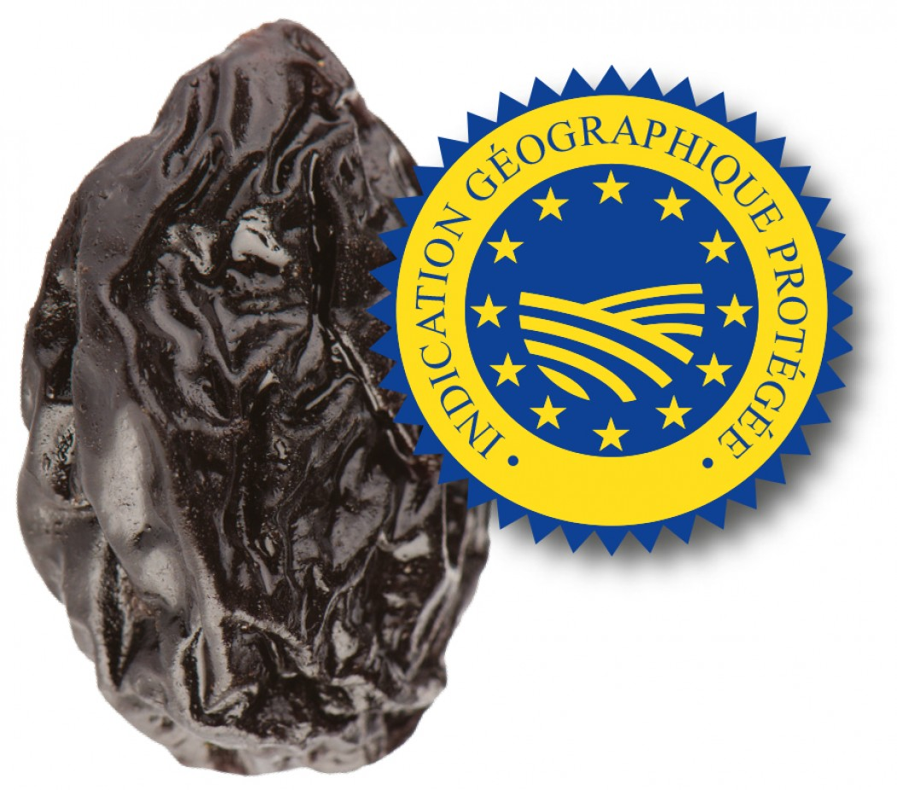

Leçon 5
Savoir se présenter 2.
自己紹介する。
Dictée ! 書き取る
Get ready !
Correction 校閲
- Une cerise, un mur, une rue, la pluie, le blé,
- Rare, une surprise, la lune, un pissenlit, un parasol,
- Un tire-bouchon, un vélo, joli, le renard, un adjectif,
- Une qualité, un cadeau, chanter, qui, un autocollant
Qui est-ce ?

Prénom : Emmanuel
Nom : Macron
Travail : Président de la république
Lieu de résidence : France, Paris
Nationalité : Français
Poser des questions 質問を聞く
Les 3 types de questions
A classic sentence :
Sujet Verbe Complément Ponctuation
主語 動詞 補部 約物
Je bois de l’eau
- Je bois de l’eau .
Question polie 畏まった :
主語 動詞 補部 約物
Bois - je de l’eau ?
Question usuelle 只 :
主語 動詞 補部 約物
Est-ce que je bois de l’eau ?
Question familière 略式 :
主語 動詞 補部 約物
Je bois de l’eau ?
All together
Je bois de l’eau .
Bois - je de l’eau ?
Est-ce que je bois de l’eau ?
Je bois de l’eau ?
Exercices 問題
| 1 | Quel âge as-tu ? | a | Je suis marocaine. |
| 2 | Quelle est ta nationalité ? | b | J’ai 14 ans. |
| 3 | Quelle est ta ville de naissance ? | c | Je suis fils unique. |
| 4 | Combien avez-vous de frères et de sœurs ? | d | Je suis né le 24/12/1950. |
| 5 | Quelle est votre date de naissance ? | e | Je suis née à Paris. |
| 6 | Quelle est votre situation familiale ? | f | Oui, je suis mariée. |
| 7 | Est-ce que vous êtes mariée ? | g | Non, je n’ai pas d’enfants. |
| 8 | Est-ce que vous avez un fiancé ? | h | Je suis célibataire. |
| 9 | Est-ce que vous avez des enfants ? | i | J’ai deux filles et un fils. |
| 10 | Combien as-tu d’enfants ? | j | Oui, j’ai fêté mes fiançailles il y a 1 an. |
- 1-b, 2-a, 3-e, 4-c, 5-d, 6-h, 7-f, 8-j, 9-g, 10-i
Les mois de l’année
一月、二月、三月、四月、五月、六月
- Janvier
- Février
- Mars
- Avril
- Mai
- Juin
七月、八月、九月、十月、十一月、十二月
- Juillet
- Août
- Septembre
- Octobre
- Novembre
- Décembre
Remplir un formulaire 欄を書き込む
NOM : ＿＿＿＿＿ PRENOM : ＿＿＿＿＿ DATE DE NAISSANCE : ＿＿/＿＿/＿＿ à : ＿＿＿＿＿ ADRESSE : ＿＿＿＿＿＿＿＿＿＿ ＿＿＿＿＿＿＿＿＿＿＿＿＿＿＿＿＿＿＿＿ TELEPHONE* : ＿＿ ＿＿ ＿＿ ＿＿ ＿＿
- Nombres
ADRESSE EMAIL : ＿＿＿＿＿ @ ＿＿＿＿＿ Fait le* : ＿＿/＿＿/＿＿ A : ＿＿＿＿＿ Signature : ＿＿＿＿＿＿＿＿＿＿
- Mois
La pause culture
Les pruneaux d’Agen 干し李



Les devoirs 宿題
Please fill in the following registration form :
来てくれてありがとう
Merci d’être venu aujourd’hui !